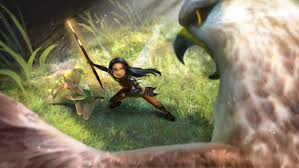

Hawk
Hawks can but very cute when little but don't let that fool you. Grown hawks will grow an appetite for fairies. Scout Fairies help keep us safe, Nyx is one of the best of and the leader.


Hawks can but very cute when little but don't let that fool you. Grown hawks will grow an appetite for fairies. Scout Fairies help keep us safe, Nyx is one of the best of and the leader.
